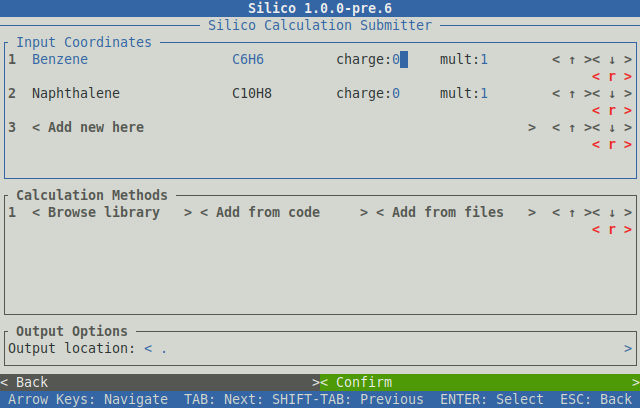
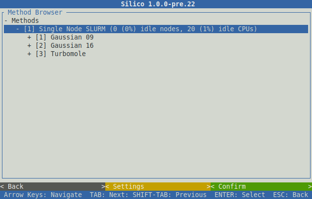
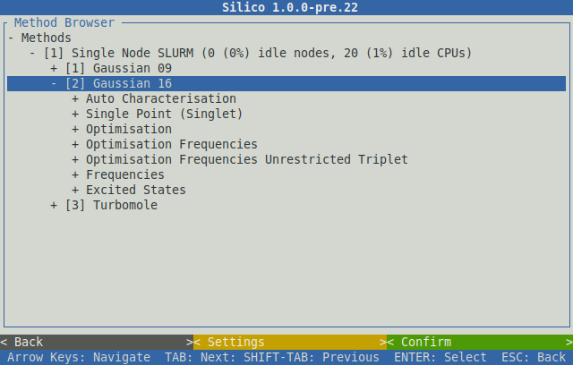
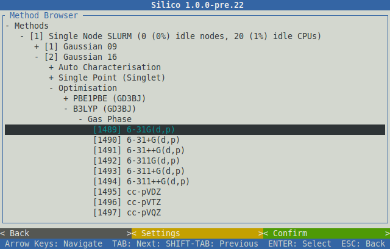
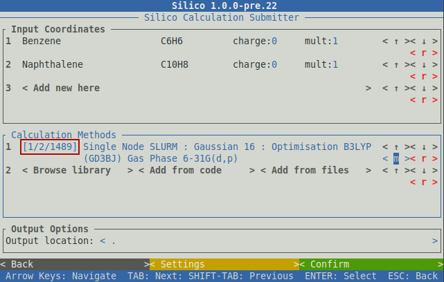
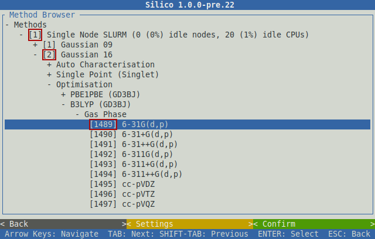
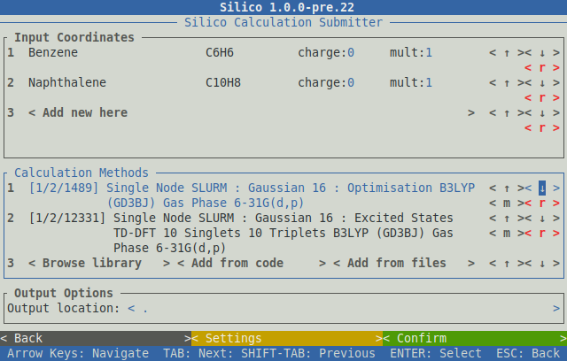

Calculation Submission Tutorial
Perhaps the most powerful aspect of Silico is its functionality for submitting and managing calculations. This tutorial acts as a walk-through for running through this process and is an excellent start for performing computations with Silico.
Prepare Coordinate Files
The first step in submitting a calculation is to prepare the coordinate files. These files represent the molecules upon which the calculation (or calculations) will be performed; one molecule per file. The file format used for these input coordinates is essentially irrelevant, so long as the format is supported by Silico, and different formats can be freely intermixed. See the list of available formats and section on coordinate files for more information.
The first step in the submission process is to write the systems that are to be studied to respective coordinate files. The choice of file format is essentially irrelevant, and different file formats can be freely intermixed. Once written, these coordinate files should be transfered to the machine on which the calculation is to be performed (most commonly a remote server or cluster) by whatever method is most convenient (File-Transfer Protocol (FTP), SSH File Transfer Protocol (SFTP) etc).
Connect To The Calculation Server
In most cases, computational chemistry programs are run on large, distributed server clusters. If this setup applies to you, at this point you should connect to the server cluster where Silico is installed (for example, by SSH, PuTTy or equivalent).
Run Silico
Once the required coordinate files (and optionally method files) have been prepared, it is time to run Silico. This can be done in either a non-interactive or interactive manner (see Running Interactively); for the purposes of this tutorial the interactive interface will primarily be used. To begin, run the silico submit subprogram followed by a list of the coordinate files to submit. For example, to submit two files named ‘Benzene.cdx’ and ‘Naphthalene.com’, run:
$ silico sub -I Benzene.cdx Naphthalene.com
At this point, an explicit charge and/or multiplicity can be set using the -C (or --charge) and -M (or --multiplicity) options. If given, these options will overwrite any charge or multiplicity given in the coordinate files, for all specified coordinate files. For example, to submit all calculations as a radical cation:
$ silico sub -I Benzene.cdx Naphthalene.com -C 1 -M 2
If any of the file names contain whitespace, or other ‘unusual’ characters, remember to use quotation marks:
$ silico sub -I "Benz ene.cdx" Naphthalene.com
If any of the coordinate files are not in the current directory, the full path should be specified (including directories):
$ silico sub -I Aromatic/Benzene.cdx Aromatic/Naphthalene.com
Note
Alternatively, you can change the current directory using the cd command, for example cd Aromatic.
Note
You can check which files are in the current directory using the ls command.
In additional to individual coordinate files, the contents of entire directories can be submitted via the unix wildcard character (*):
$ silico sub -I Aromatic/*
Finally, you may choose to not specify any input coordinates at this time, in which case they can be loaded later using the interactive interface (see Adding New Coordinates)
$ silico sub -I
The Interactive Interface
Any of the above commands will run the silico submit subprogram in interactive mode, which will open a window that appears as follows:
This interface acts similarly to a graphical user interface (GUI). The various parts of the interface can be navigated by the arrow keys. Doing so will move the flashing cursor which indicates the part of the interface which is currently selected.
Input Coordinates
The upper section of the submission interface displays loaded input coordinates in a table format, along with the relevant molecular
formula, charge and multiplicity. These latter two columns can be edited individually for each system under study.
For example, to change the multiplicity of ‘Benzene’ in the above example, first move the cursor with the arrow keys to the mult:1 widget for the ‘Benzene’ row.
Then, the old multiplicity can be removed used the backspace key, and a new multiplicity can be typed.
The three widgets in the right-most column of the coordinate table can be used to control the position of each row.
These widgets are buttons, which can be readily identified by the angle brackets surrounding the text of the button (eg, < Button >).
Buttons can be ‘clicked’ or ‘activated’ by first selecting them with the cursor and then pressing ‘enter’ (or ‘space’).
In this case, the < ↑ > and < ↓ > buttons will move each row up or down one position respectively,
while the < r > button will delete the given row.
Adding New Coordinates
New input coordinate files can also be loaded at this point using the < Add new here > button, which will open the file browser:
This browser displays a list of files in a ‘tree’ like format; each directory (or folder) appears as a ‘branch’ node with a ‘+’ icon (which can be expanded to show its contents) while each file appears as a ‘leaf’ node (which cannot). To expand (or ‘open’) a directory, navigate up or down with the arrow keys to select it, and then use the ‘right arrow’ key to expand it. An expanded directory will show a ‘-’ icon instead of a ‘+’. A directory can similarly be contracted by selecting it and using the ‘left arrow’ key to hide its contents.
To select a coordinate file to load, use the ‘space’ or ‘enter’ key to highlight it. If a file is chosen in error, pressing ‘space’ again will deselect it.
Once the files to be loaded have been selected, navigate to the < Confirm > button in the bottom right corner and select it.
Note
Instead of using the down arrow key to navigate all the way to the bottom of the page, the ‘tab’ key can be used to skip directly to the controls at the bottom of the window. Similarly, ‘shift-tab’ (holding shift will pressing tab) will skip back to the browser.
This will load each of the chosen coordinate files.
Once complete, the ‘Finished loading coordinates’ line be printed, at which point the output window can be closed using the < Confirm > button:
Calculation Methods
The ‘Calculation Methods’ section of the submission interface is where the actual calculations to be performed are selected.
In most cases this will be done by selecting a (number of) methods from the built in library.
To do so, ‘click’ the < Browse library > button to open the method browser:
Conceptually, each method consists of three parts, which are:
The Destination: A logical or physical location where the calculation will be performed, for example a specific SLURM partition.
The Program: A CC progam to perform the calculation, for example Gaussian or Turbomole.
The Calculation: A specific set of calculation instructions, including, for example, the method, functional and basis set.
Each part of the method is chosen from the browser sequentially. This first item to choose is the destination. These will have been setup by your server administrator, so you should contact them if you are unsure which to choose. In the above example there is only one destination available, a SLURM partition called ‘Single Node SLURM’. This destination can be expanded in the same manner as the file browser above, by navigating with the arrow keys and expanding the node with the right arrow key.
Doing so will reveal the CC programs that this destination supports, in this example there is a Gaussian 09, a Gaussian 16 and a Turbomole program available:
Similarly, expanding a program will reveal the calculations that program supports. For example, the calculations the ‘Gaussian 16’ program supports are as follows:
These calculation types are grouped in a hierarchy, where the top-most item describes the general calculation type, for example an ‘Optimisation’ or calculation of ‘Excited States’. Within each heading the specifics of the calculation can be chosen, for example the below selection is for an optimisation using the popular B3LYP functional and 6-31G(d,p) basis set, in the gas phase:
To choose a given method, select the final item (typically the basis set), highlight it with the ‘enter’ or ‘space’ keys and then ‘click’ the < Confirm > button.
It will then be added to the method table:
Method Codes
You will notice that each of the three items of the method is given a unique code (an integer which is greater than zero). These codes are shown both in the method browser and the method table:
 For example, the method chosen above has the method code of 1/2/1489.
These method codes are unique and stable (they do not change randomly), meaning they can be used as a quick way to refer to a method.
Among other things, this allows a method to be selected by using its code alone by clicking the < Add from code > button of the method table and entering the relevant code directly:
Method Queuing
Silico allows multiple methods to be queued up to be performed one after another. This in-series calculation queuing works by taking the output geometry of the previous calculation and automatically submitting it to the next calculation. This is particularly useful for calculations that depend on a certain type of optimised geometry. For example, the calculation of excited states typically requires a prior optimisation of the geometry which has to be performed as a separate step. To queue up such a series of calculations, simply add a second method (or as many as are required) after the first. The methods will be processed in the same order as they appear in the table:
Note
Methods can even be queued using different CC programs; the output geometry from the previous calculation will automatically be converted to an appropriate input type for the next CC progrm.
Submit
Once the desired input coordinates and calculation methods have been chosen, the selection can be submitted by selecting the < Confirm > button.
Information will be shown as each coordinate file is prepared and then submitted.
Once all files have been processed, the ‘Successfully submitted x file(s)’ line will appear:
Congratulations, the input coordinates have now been submitted and Silico can be exited (by using the ‘esc’ key), or further calculations can be queued.